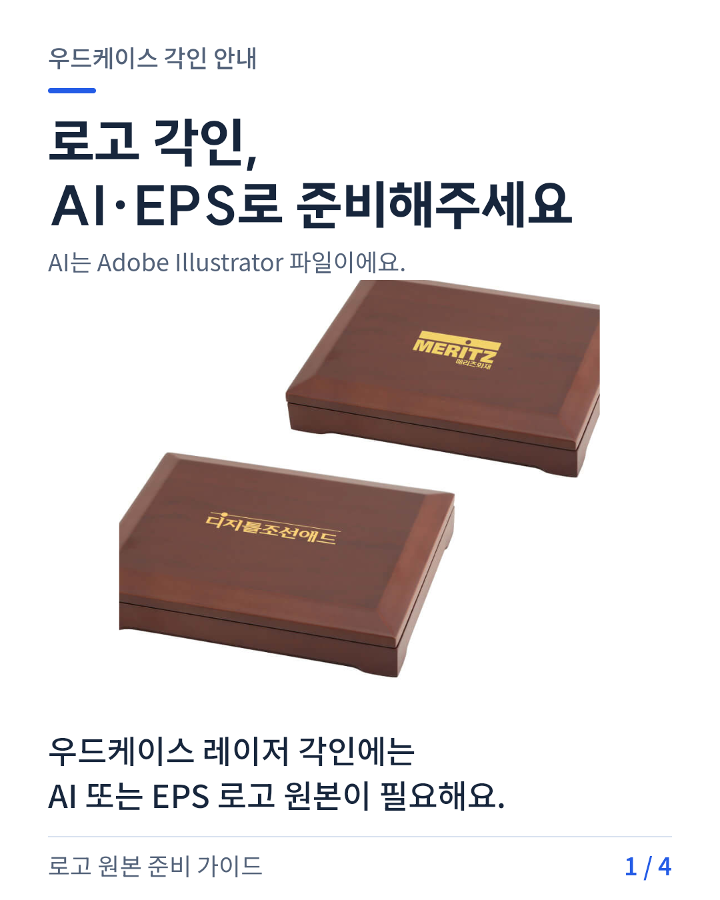
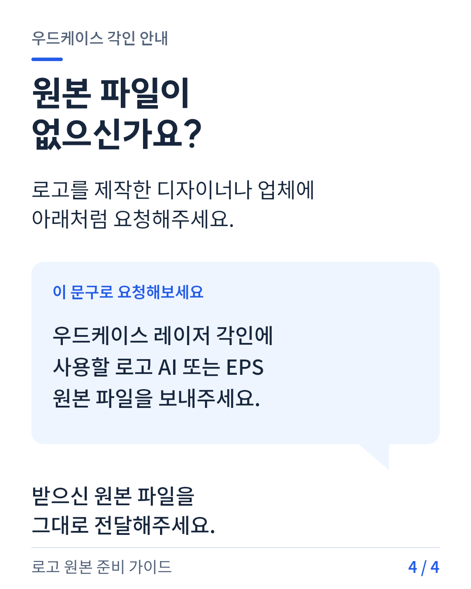

우드케이스 각인 안내
궁금한 내용을 하단 책갈피에서 골라보세요.

로고 각인, AI·EPS로 준비해주세요
AI는 Adobe Illustrator 파일이에요. 우드케이스 레이저 각인에는 AI 또는 EPS 로고 원본이 필요해요.

왜 원본 파일이 필요한가요?
각인할 로고의 선과 모양을 확인하기 위해서예요. 이미지는 픽셀로, 로고 원본은 선과 면 정보로 이루어져 있어요. 사진이나 캡처 이미지에는 이 선 정보가 담겨 있지 않아요.

이 파일로 보내주세요
로고의 선 정보가 담긴 AI(.ai) 또는 EPS(.eps) 원본을 보내주세요. JPG, PNG, GIF, 캡처 이미지는 저희 서비스의 각인용 원본으로 사용할 수 없어요. 확장자만 바꿔도 원본 파일이 되지는 않아요.

원본 파일이 없으신가요?
로고를 제작한 디자이너나 업체에 아래처럼 요청해주세요.
우드케이스 레이저 각인에 사용할 로고 AI 또는 EPS 원본 파일을 보내주세요.
받으신 원본 파일을 그대로 전달해주세요.